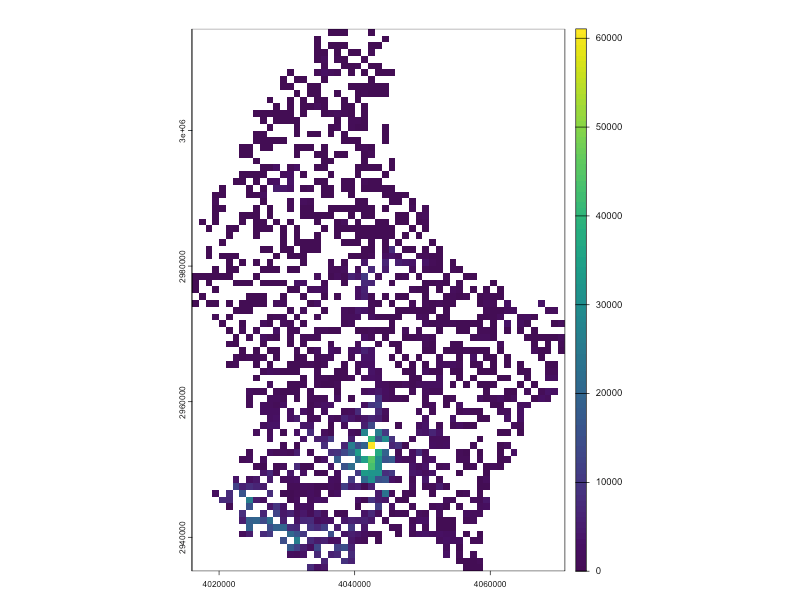

Overview
tphconv is an R package for converting public transport accessibility data from the Transport Poverty Hub into raster and vector spatial formats with GISCO IDs. It’s designed to:
This makes it easy to integrate transport accessibility information into GIS workflows for analysis and visualization.
Installation
You can install the development version of tphconv from GitHub:
# install.packages("remotes")
remotes::install_github("e-kotov/tphconv")Data Source
Accessibility data is provided by the Transport Poverty Hub Dashboard, which requires a free EU account to log in. The dashboard allows you to download precomputed CSV files on a 1 km grid for various countries, including Luxembourg.
Once you have downloaded a file (e.g., ver1_0_LU_1km_pt_ppl_within_10-20_min.csv.gz), you can point tphconv to it directly.
Functions
tph_to_raster()– Reads a CSV, reprojects, and rasterizes accessibility data into aSpatRasteror writes it to disk ifout_raster_fileis specified (with extensions that are supported byterra).tph_to_vector()– Reads a CSV, reprojects, and converts accessibility data into aSpatVectororsfobject, or writes it to disk ifout_vector_fileis specified (with extensions that are supported bysf, such as GPKG, GeoJSON, Shapefile, etc.).tph_to_table()– Reads a CSV and returns a simple tibble with GISCO IDs, optionally including centroid coordinates and GISCO lower left corner coordinates.
Usage Examples
Most defaults should work as long as the data provider does not change the format of the CSV files. The package is designed to handle the standard format used by the Transport Poverty Hub, but arguments can be adjusted if necessary.
Convert a CSV to a Raster
library(tphconv)
# Locate the example data shipped with the package
tph_file <- system.file(
"extdata",
"ver1_0_LU_1km_pt_ppl_within_10-20_min.csv.gz",
package = "tphconv"
)
# Convert to a SpatRaster
raster_layer <- tph_to_raster(input_file = tph_file)
library(terra)
plot(raster_layer[[1]], main = "Transport Poverty Hub Accessibility Data")
Note that the raster layer also has the GISCO IDs by default (can be disabled with add_id = FALSE). In QGIS these will be visible in the Raster Attribute Table, otherwise they are just another numeric layer with labels.
raster_layerclass : SpatRaster
size : 81, 56, 2 (nrow, ncol, nlyr)
resolution : 1000, 1000 (x, y)
extent : 4015000, 4071000, 2934000, 3015000 (xmin, xmax, ymin, ymax)
coord. ref. : ETRS89-extended / LAEA Europe (EPSG:3035)
source(s) : memory
names : opportunities_people, gisco_id
min values : 0, CRS3035RES1000mN3014000E4036000
max values : 61065, CRS3035RES1000mN2934000E4057000 Write Raster to Disk
tmp_file <- tempfile(fileext = ".tiff")
output_path <- tph_to_raster(
input_file = tph_file,
out_raster_file = tmp_file
)
# Check the output
g <- terra::rast(output_path)
g
unlink(tmp_file) # Clean up temporary fileclass : SpatRaster
size : 81, 56, 2 (nrow, ncol, nlyr)
resolution : 1000, 1000 (x, y)
extent : 4015000, 4071000, 2934000, 3015000 (xmin, xmax, ymin, ymax)
coord. ref. : ETRS89-extended / LAEA Europe (EPSG:3035)
source : file3d183d8ea354.tiff
names : opportunities_people, gisco_id
min values : 0, CRS3035RES1000mN3014000E4036000
max values : 61065, CRS3035RES1000mN2934000E4057000 Convert to Vector Polygons
library(tphconv)
# Locate the example data shipped with the package
tph_file <- system.file(
"extdata",
"ver1_0_LU_1km_pt_ppl_within_10-20_min.csv.gz",
package = "tphconv"
)
# Convert to a sf
vector_layer_sf <- tph_to_vector(input_file = tph_file, return_as = "sf")
plot(vector_layer_sf[, "opportunities_people"])
# Convert to a SpatVector
library(terra)
vector_layer_spat_vector <- tph_to_vector(
input_file = tph_file,
return_as = "SpatVector"
)
plot(vector_layer_spat_vector, "opportunities_people")Plots ommited for brevity
Save Vector Polygons to Disk
tmp_file <- tempfile(fileext = ".gpkg")
output_path <- tph_to_vector(
input_file = tph_file,
out_vector_file = tmp_file
)
# Check the output
g <- sf::read_sf(output_path)
g
unlink(tmp_file) # Clean up temporary fileSimple feature collection with 1600 features and 2 fields
Geometry type: POLYGON
Dimension: XY
Bounding box: xmin: 4015000 ymin: 2934000 xmax: 4071000 ymax: 3015000
Projected CRS: ETRS89-extended / LAEA Europe
# A tibble: 1,600 × 3
opportunities_people gisco_id geom
<dbl> <chr> <POLYGON [m]>
1 2625 CRS3035RES1000mN2934000E4033000 ((4033000 2934000, 4034000 293…
2 375 CRS3035RES1000mN2934000E4057000 ((4057000 2934000, 4058000 293…
3 7463 CRS3035RES1000mN2935000E4032000 ((4032000 2935000, 4033000 293…
4 10955 CRS3035RES1000mN2935000E4033000 ((4033000 2935000, 4034000 293…
5 4087 CRS3035RES1000mN2935000E4034000 ((4034000 2935000, 4035000 293…
6 4804 CRS3035RES1000mN2935000E4037000 ((4037000 2935000, 4038000 293…
7 518 CRS3035RES1000mN2935000E4056000 ((4056000 2935000, 4057000 293…
8 112 CRS3035RES1000mN2935000E4057000 ((4057000 2935000, 4058000 293…
9 3515 CRS3035RES1000mN2936000E4032000 ((4032000 2936000, 4033000 293…
10 7236 CRS3035RES1000mN2936000E4033000 ((4033000 2936000, 4034000 293…
# ℹ 1,590 more rows
# ℹ Use `print(n = ...)` to see more rowsConvert to simple table with GISCO IDs
This is the fastest function, as it does not create geometries, it only returns a table with original data and GISCO IDs, and optionally the original coordinates of the centroids and/or the coorindates of GISCO lower left corners of the grid cells.
library(tphconv)
# Locate the example data shipped with the package
tph_file <- system.file(
"extdata",
"ver1_0_LU_1km_pt_ppl_within_10-20_min.csv.gz",
package = "tphconv"
)
# Convert to a tibble with GISCO IDs
gisco_table <- tph_to_table(
input_file = tph_file,
add_centroid_coords = TRUE, # Optiona, Add centroid coordinates
add_gisco_corner_coords = TRUE # Optional, Add GISCO lower left corner coordinates
)
head(gisco_table) gisco_id opportunities_people lon lat x_centroid y_centroid x_ll y_ll
1 CRS3035RES1000mN2934000E4033000 2625 6.033336 49.45356 4033500 2934500 4033000 2934000
2 CRS3035RES1000mN2934000E4057000 375 6.363958 49.46471 4057500 2934500 4057000 2934000
3 CRS3035RES1000mN2935000E4032000 7463 6.018829 49.46205 4032500 2935500 4032000 2935000
4 CRS3035RES1000mN2935000E4033000 10955 6.032604 49.46254 4033500 2935500 4033000 2935000
5 CRS3035RES1000mN2935000E4034000 4087 6.046380 49.46302 4034500 2935500 4034000 2935000
6 CRS3035RES1000mN2935000E4037000 4804 6.087708 49.46447 4037500 2935500 4037000 2935000License
The package is licensed under MIT. Data from the Transport Poverty Hub Dashboard is available under CC-BY-4.0, with reuse policy outlined by the EU Commission Decision of 12 December 2011.
Citation
To cite package ‘tphconv’ in publications use:
Kotov E (2025). tphconv: Convert Transport Poverty Hub Data to Rasters and Vectors. R package version 0.1.0, https://github.com/e-kotov/tphconv.
BibTeX: